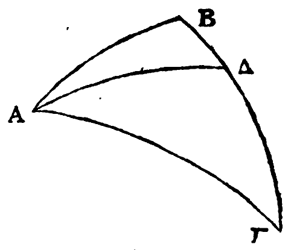

Prop. IX. Theor. (Halley 1758, p. 9)¶
Menelai Alexandrini Sphaericorum Lib. I Prop. IX. Theor. (Halley 1758, p. 9)


Enuntiatio (Halley 1758, p. 9)
In omni triangulo Sphaerico major arcus majorem angulum subtendit.
Sit ΑΒΓ triangulum Sphaericum, sitque arcus ΒΓ major arcu ΒΑ: dico quod angulus Α major est angulo Γ.
In arcu ΒΓ fiat ΓΔ aequalis arcui ΑΒ, & per puncta Α, Δ ducatur arcus circuli magni ΑΔ. Quoniam igitur duo arcus ΑΒ, ΒΔ simul sumpti (per 5tam huj.) sunt majores arcu ΑΔ, & arcus ΑΒ aequalis est arcui ΔΓ; erit arcus ΒΔΓ major arcu ΑΔ. Est autem arcus ΔΓ aequalis ipsi ΑΒ, & ΑΓ communis; proinde duo arcus ΔΓ, ΓΑ aequales sunt duobus ΒΑ, ΑΓ, unusquisque relativo suo. Basis autem ΒΔΓ major est basi ΑΔ: quare (per praeced.) angulus ΒΑΓ major est angulo ΑΓΒ. Q. E. D.